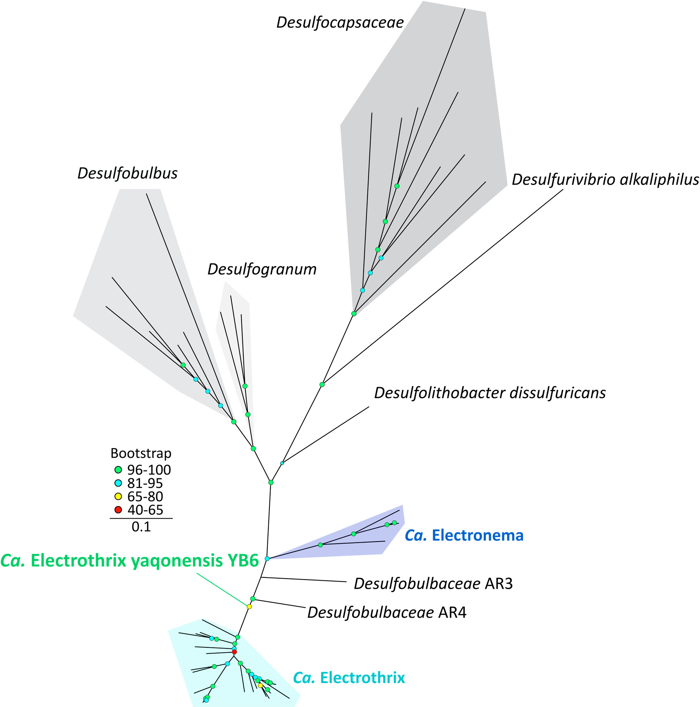
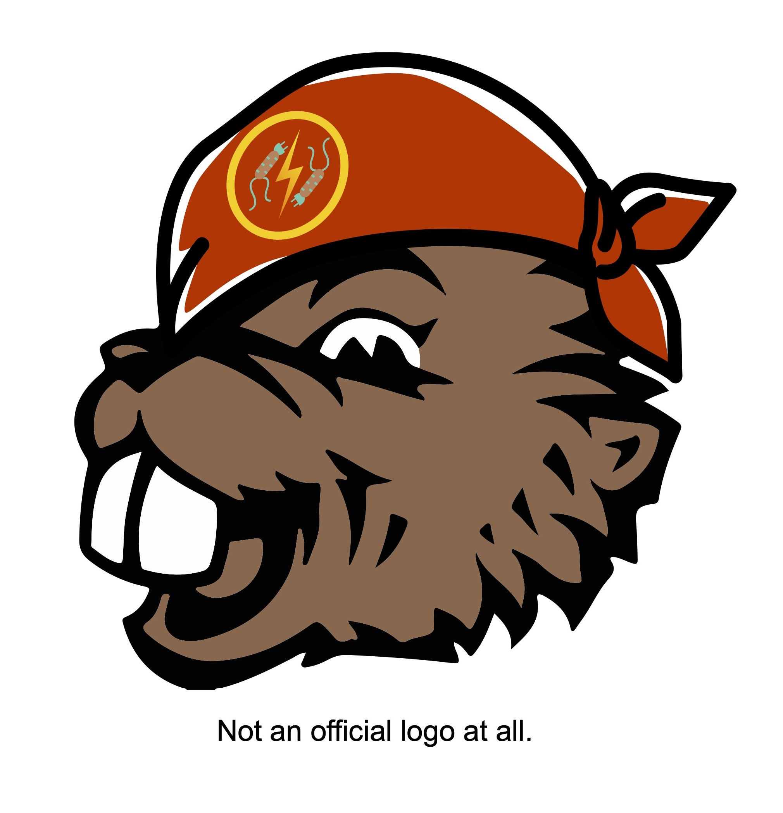
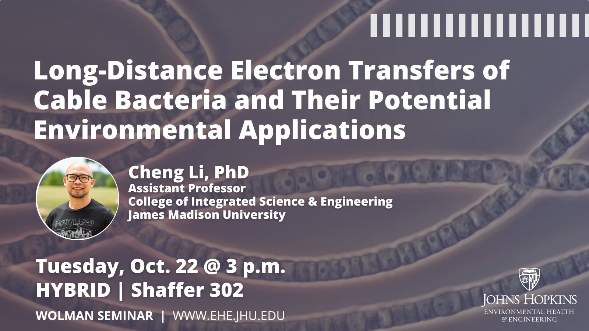
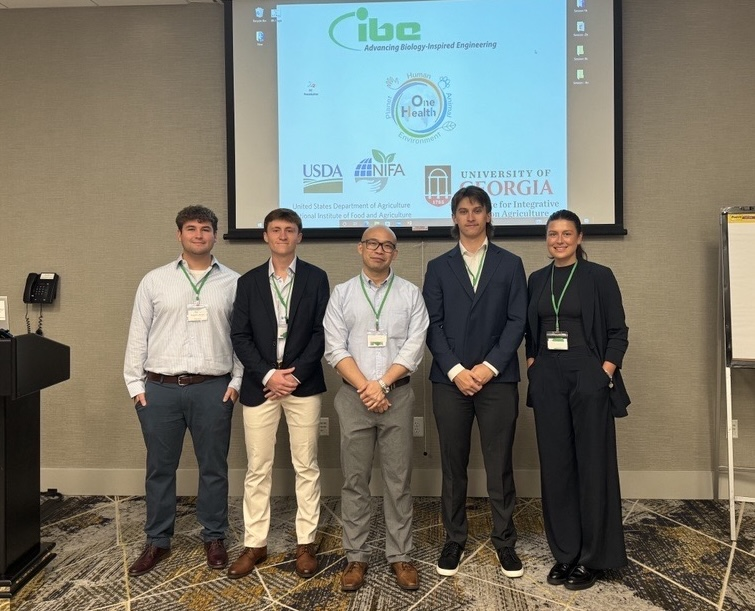

About Electrobiotech Lab
The Electrobiotech Lab at Oregon State University conducts innovative research at the intersection of microbiology, electrochemistry, and environmental engineering. Our mission is to advance electrobiotechnology to address critical challenges in energy, water, and resource sustainability, particularly through circular economy strategies that convert waste into valuable resources.
We specialize in harnessing electroactive microbes to power and optimize bioelectrochemical systems such as microbial fuel cells (MFCs) and microbial electrolysis cells (MECs). These systems serve as tools for wastewater treatment, renewable energy generation, carbon capture, and bioproduct recovery. A key focus of our lab is cable bacteria, known for their unique ability to conduct electricity over centimeter-scale distances in sediments, opening new frontiers in sediment remediation and ecological engineering.
Our work extends beyond technical innovation to include cultural and community engagement. We collaborate with Indigenous communities to integrate traditional ecological knowledge into our scientific practice, including honoring heritage through species naming and ecological stewardship partnerships.
We envision a future where food, energy, and water systems are resilient, circular, and equitable. Our research contributes to this goal by developing scalable, nature-based solutions that align with ecological principles and advance sustainability in biotechnological, agricultural, and environmental domains.
Lab Updates
Watch Dr. Cheng Li's presentation on the discovery of Ca. Electrothrix yaqonensis at ASM Microbe 2025.

Our lab co-discovered a new cable bacterium species, Ca. Electrothrix yaqonensis!
Learn more →
Dr. Cheng Li has accepted a faculty position in the Department of Biological & Ecological Engineering at Oregon State University, beginning June 1, 2025.

Electrobiotech Lab received funding to advance marine microbial fuel cells power output!
Read more →
Cheng was invited to present at the Wolman Seminar, Johns Hopkins University, October 22nd.
